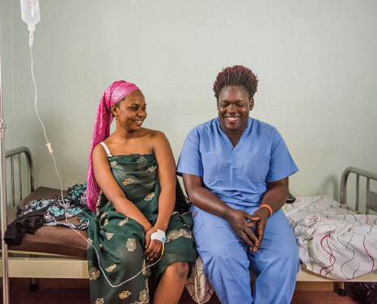
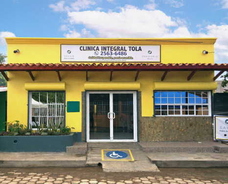
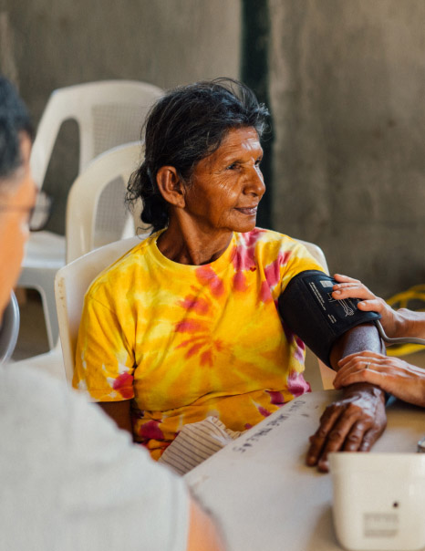

We specialize in traditional architecture, design, and planning adhering to the classic principles of the lowcountry vernacular.


With experience in design, construction, preservation, photography, management, and marketing, the CDG team brings broad talents and experiences to the Custom Home Design process. We enjoy and fully explore each stage in the design process from site analysis and land planning, through plan development, to construction details and methods.
With over 20 years in business, Rosane Borges Paisagismo has designed home and light commercial projects throughout the country with current commissions in the Carolinas, Florida, and Alabama.

Florida
Porch
High Thyme

Indiana
Entryway
Langdons

Belmont, NC
Kitchen
Leon's

Enterprise, AL
Drawing Room
Little Jacks

Kimberly, WI
Kitchen
Poogans Porch

Birmingham, AL
Conservatory
Sorelle

Pascagoula, MS
Kitchen
Magnolias
We pair our architectural expertise with love and servant hearts to make a lasting community impact.
OneWorld Health has worked side by side with communities in need for 12 years to better understand the challenges of access and quality in healthcare across the globe—and help ensure that your birth country does not determine your ability to access basic healthcare.
OneWorld Health builds and operate inpatient and outpatient care facilities, providing high-quality, affordable medical care to impoverished communities. From inception, each project is carefully planned to ensure that every dollar invested will create a long-term impact in the community.
Since 2017, Rosane Borges Paisagismo has partnered with OneWorld Health to provide financial support for all architecture and planning costs associated with OneWorld Health’s newest facilities in East Africa and Central America.
Phil and our design team work in partnership with local OneWorld Health’s local leadership teams in Uganda, Nicaragua, and Honduras to provide expertise and oversight in the architectural planning phases of the facilities.


